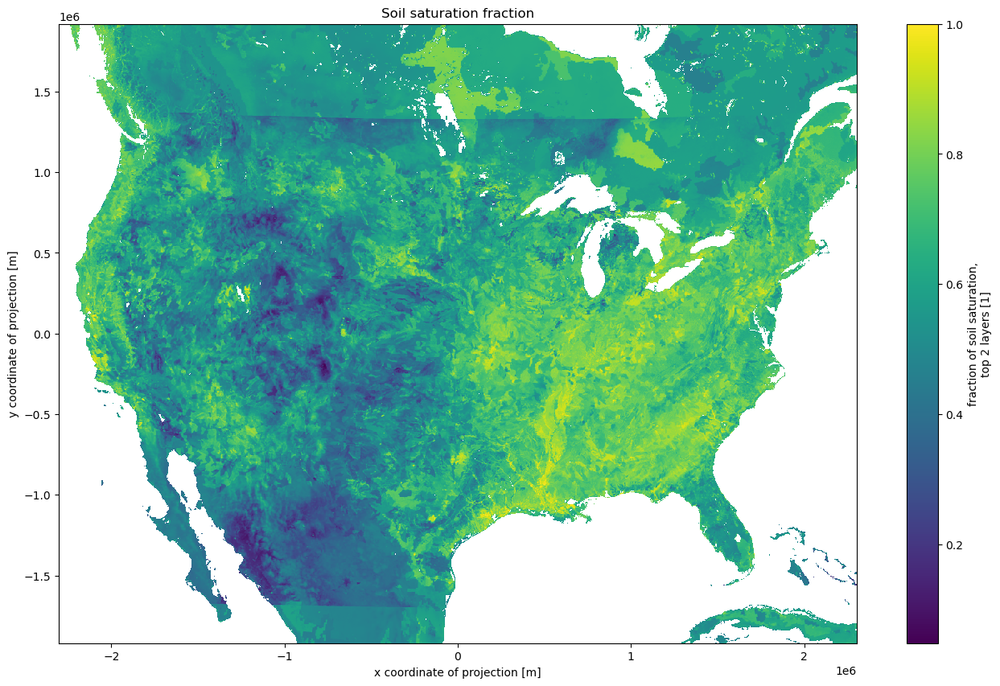

National Water Model Example
This notebook gives a brief introduction to the National Water Model data available from Azure Blob Storage. It uses xarray and adlfs to load the NetCDF files and visualize the data. We’ll work with the raw NetCDF data pushed to azure by NODD .
The goals of this notebook are to learn what NWM data are available on Azure, and to build a bit of familiarity with the compute environment you’re in.
A new set of files is produced every few hours. This example uses the files from 2023-01-23T00:00. We’ll load a short-range forecast for the Continental United States.
<xarray.Dataset>
Dimensions: (time: 1, reference_time: 1, x: 4608, y: 3840)
Coordinates:
* time (time) datetime64[ns] 2023-01-23T01:00:00
* reference_time (reference_time) datetime64[ns] 2023-01-23
* x (x) float64 -2.303e+06 -2.302e+06 ... 2.303e+06 2.304e+06
* y (y) float64 -1.92e+06 -1.919e+06 ... 1.918e+06 1.919e+06
Data variables:
crs |S1 ...
SNOWH (time, y, x) float64 ...
SNEQV (time, y, x) float64 ...
FSNO (time, y, x) float64 ...
ACCET (time, y, x) float64 ...
SOILSAT_TOP (time, y, x) float64 ...
SNOWT_AVG (time, y, x) float64 ...
Attributes:
TITLE: OUTPUT FROM NWM v2.2
model_initialization_time: 2023-01-23_00:00:00
model_output_valid_time: 2023-01-23_01:00:00
model_total_valid_times: 18
Conventions: CF-1.6
code_version: v5.2.0-beta2
NWM_version_number: v2.2
model_output_type: land
model_configuration: short_range
proj4: +proj=lcc +units=m +a=6370000.0 +b=6370000.0 ...
GDAL_DataType: Generic Dimensions: time : 1reference_time : 1x : 4608y : 3840
Coordinates: (4)
Data variables: (7)
crs
()
|S1
...
longitude_of_prime_meridian : 0.0 standard_parallel : [30. 60.] longitude_of_central_meridian : -97.0 latitude_of_projection_origin : 40.0 false_easting : 0.0 false_northing : 0.0 earth_radius : 6370000.0 semi_major_axis : 6370000.0 inverse_flattening : 0.0 transform_name : lambert_conformal_conic grid_mapping_name : lambert_conformal_conic esri_pe_string : PROJCS["Lambert_Conformal_Conic",GEOGCS["GCS_Sphere",DATUM["D_Sphere",SPHEROID["Sphere",6370000.0,0.0]],PRIMEM["Greenwich",0.0],UNIT["Degree",0.0174532925199433]],PROJECTION["Lambert_Conformal_Conic_2SP"],PARAMETER["false_easting",0.0],PARAMETER["false_northing",0.0],PARAMETER["central_meridian",-97.0],PARAMETER["standard_parallel_1",30.0],PARAMETER["standard_parallel_2",60.0],PARAMETER["latitude_of_origin",40.0],UNIT["Meter",1.0]];-35691800 -29075200 10000;-100000 10000;-100000 10000;0.001;0.001;0.001;IsHighPrecision spatial_ref : PROJCS["Lambert_Conformal_Conic",GEOGCS["GCS_Sphere",DATUM["D_Sphere",SPHEROID["Sphere",6370000.0,0.0]],PRIMEM["Greenwich",0.0],UNIT["Degree",0.0174532925199433]],PROJECTION["Lambert_Conformal_Conic_2SP"],PARAMETER["false_easting",0.0],PARAMETER["false_northing",0.0],PARAMETER["central_meridian",-97.0],PARAMETER["standard_parallel_1",30.0],PARAMETER["standard_parallel_2",60.0],PARAMETER["latitude_of_origin",40.0],UNIT["Meter",1.0]];-35691800 -29075200 10000;-100000 10000;-100000 10000;0.001;0.001;0.001;IsHighPrecision long_name : CRS definition GeoTransform : -2303999.17655 1000.0 0 1919999.66329 0 -1000.0 _CoordinateAxes : y x _CoordinateTransformType : Projection [1 values with dtype=|S1] SNOWH
(time, y, x)
float64
...
long_name : Snow depth units : m grid_mapping : crs valid_range : [ 0 1000000] esri_pe_string : PROJCS["Lambert_Conformal_Conic",GEOGCS["GCS_Sphere",DATUM["D_Sphere",SPHEROID["Sphere",6370000.0,0.0]],PRIMEM["Greenwich",0.0],UNIT["Degree",0.0174532925199433]],PROJECTION["Lambert_Conformal_Conic_2SP"],PARAMETER["false_easting",0.0],PARAMETER["false_northing",0.0],PARAMETER["central_meridian",-97.0],PARAMETER["standard_parallel_1",30.0],PARAMETER["standard_parallel_2",60.0],PARAMETER["latitude_of_origin",40.0],UNIT["Meter",1.0]];-35691800 -29075200 10000;-100000 10000;-100000 10000;0.001;0.001;0.001;IsHighPrecision [17694720 values with dtype=float64] SNEQV
(time, y, x)
float64
...
long_name : Snow water equivalent units : kg m-2 grid_mapping : crs valid_range : [ 0 1000000] esri_pe_string : PROJCS["Lambert_Conformal_Conic",GEOGCS["GCS_Sphere",DATUM["D_Sphere",SPHEROID["Sphere",6370000.0,0.0]],PRIMEM["Greenwich",0.0],UNIT["Degree",0.0174532925199433]],PROJECTION["Lambert_Conformal_Conic_2SP"],PARAMETER["false_easting",0.0],PARAMETER["false_northing",0.0],PARAMETER["central_meridian",-97.0],PARAMETER["standard_parallel_1",30.0],PARAMETER["standard_parallel_2",60.0],PARAMETER["latitude_of_origin",40.0],UNIT["Meter",1.0]];-35691800 -29075200 10000;-100000 10000;-100000 10000;0.001;0.001;0.001;IsHighPrecision [17694720 values with dtype=float64] FSNO
(time, y, x)
float64
...
long_name : Snow-cover fraction on the ground units : 1 grid_mapping : crs valid_range : [ 0 1000] esri_pe_string : PROJCS["Lambert_Conformal_Conic",GEOGCS["GCS_Sphere",DATUM["D_Sphere",SPHEROID["Sphere",6370000.0,0.0]],PRIMEM["Greenwich",0.0],UNIT["Degree",0.0174532925199433]],PROJECTION["Lambert_Conformal_Conic_2SP"],PARAMETER["false_easting",0.0],PARAMETER["false_northing",0.0],PARAMETER["central_meridian",-97.0],PARAMETER["standard_parallel_1",30.0],PARAMETER["standard_parallel_2",60.0],PARAMETER["latitude_of_origin",40.0],UNIT["Meter",1.0]];-35691800 -29075200 10000;-100000 10000;-100000 10000;0.001;0.001;0.001;IsHighPrecision [17694720 values with dtype=float64] ACCET
(time, y, x)
float64
...
long_name : Accumulated total ET units : mm grid_mapping : crs valid_range : [ -100000 100000000] esri_pe_string : PROJCS["Lambert_Conformal_Conic",GEOGCS["GCS_Sphere",DATUM["D_Sphere",SPHEROID["Sphere",6370000.0,0.0]],PRIMEM["Greenwich",0.0],UNIT["Degree",0.0174532925199433]],PROJECTION["Lambert_Conformal_Conic_2SP"],PARAMETER["false_easting",0.0],PARAMETER["false_northing",0.0],PARAMETER["central_meridian",-97.0],PARAMETER["standard_parallel_1",30.0],PARAMETER["standard_parallel_2",60.0],PARAMETER["latitude_of_origin",40.0],UNIT["Meter",1.0]];-35691800 -29075200 10000;-100000 10000;-100000 10000;0.001;0.001;0.001;IsHighPrecision [17694720 values with dtype=float64] SOILSAT_TOP
(time, y, x)
float64
...
long_name : fraction of soil saturation, top 2 layers units : 1 grid_mapping : crs valid_range : [ 0 1000] esri_pe_string : PROJCS["Lambert_Conformal_Conic",GEOGCS["GCS_Sphere",DATUM["D_Sphere",SPHEROID["Sphere",6370000.0,0.0]],PRIMEM["Greenwich",0.0],UNIT["Degree",0.0174532925199433]],PROJECTION["Lambert_Conformal_Conic_2SP"],PARAMETER["false_easting",0.0],PARAMETER["false_northing",0.0],PARAMETER["central_meridian",-97.0],PARAMETER["standard_parallel_1",30.0],PARAMETER["standard_parallel_2",60.0],PARAMETER["latitude_of_origin",40.0],UNIT["Meter",1.0]];-35691800 -29075200 10000;-100000 10000;-100000 10000;0.001;0.001;0.001;IsHighPrecision [17694720 values with dtype=float64] SNOWT_AVG
(time, y, x)
float64
...
long_name : average snow temperature (by layer mass) units : K grid_mapping : crs valid_range : [ 0 4000] esri_pe_string : PROJCS["Lambert_Conformal_Conic",GEOGCS["GCS_Sphere",DATUM["D_Sphere",SPHEROID["Sphere",6370000.0,0.0]],PRIMEM["Greenwich",0.0],UNIT["Degree",0.0174532925199433]],PROJECTION["Lambert_Conformal_Conic_2SP"],PARAMETER["false_easting",0.0],PARAMETER["false_northing",0.0],PARAMETER["central_meridian",-97.0],PARAMETER["standard_parallel_1",30.0],PARAMETER["standard_parallel_2",60.0],PARAMETER["latitude_of_origin",40.0],UNIT["Meter",1.0]];-35691800 -29075200 10000;-100000 10000;-100000 10000;0.001;0.001;0.001;IsHighPrecision [17694720 values with dtype=float64] Indexes: (4)
PandasIndex
PandasIndex(DatetimeIndex(['2023-01-23 01:00:00'], dtype='datetime64[ns]', name='time', freq=None)) PandasIndex
PandasIndex(DatetimeIndex(['2023-01-23'], dtype='datetime64[ns]', name='reference_time', freq=None)) PandasIndex
PandasIndex(Index([-2303499.25, -2302499.25, -2301499.25, -2300499.25, -2299499.25,
-2298499.25, -2297499.25, -2296499.25, -2295499.25, -2294499.25,
...
2294500.75, 2295500.75, 2296500.75, 2297500.75, 2298500.75,
2299500.75, 2300500.75, 2301500.75, 2302500.75, 2303500.75],
dtype='float64', name='x', length=4608)) PandasIndex
PandasIndex(Index([-1919500.375, -1918500.375, -1917500.375, -1916500.375, -1915500.375,
-1914500.375, -1913500.375, -1912500.375, -1911500.375, -1910500.375,
...
1910499.625, 1911499.625, 1912499.625, 1913499.625, 1914499.625,
1915499.625, 1916499.625, 1917499.625, 1918499.625, 1919499.625],
dtype='float64', name='y', length=3840)) Attributes: (11)
TITLE : OUTPUT FROM NWM v2.2 model_initialization_time : 2023-01-23_00:00:00 model_output_valid_time : 2023-01-23_01:00:00 model_total_valid_times : 18 Conventions : CF-1.6 code_version : v5.2.0-beta2 NWM_version_number : v2.2 model_output_type : land model_configuration : short_range proj4 : +proj=lcc +units=m +a=6370000.0 +b=6370000.0 +lat_1=30.0 +lat_2=60.0 +lat_0=40.0 +lon_0=-97.0 +x_0=0 +y_0=0 +k_0=1.0 +nadgrids=@null +wktext +no_defs GDAL_DataType : Generic
We could have chosen a number of other products that short_range.land https://planetarycomputer.microsoft.com/dataset/storage/noaa-nw has a full list of products available in Azure Blob Storage.
Let’s load up the SOILSAT_TOP
And make a pretty picture

Similar files are available for different forecast hours (f001 f002 f018
Exercise: Make a similar plot for the same datetime’s 18-hour forecast of ACCET
Reservoir Data
These forecasts also include data on channel routing, terrain routing, and reservoir output. The reservoir data can be converted from the NetCDF data model to a tabular data strcture.
<xarray.Dataset>
Dimensions: (time: 1, reference_time: 1, feature_id: 5783)
Coordinates:
* time (time) datetime64[ns] 2023-01-23T01:00:00
* reference_time (reference_time) datetime64[ns] 2023-01-23
* feature_id (feature_id) int32 491 531 ... 1021092845
latitude (feature_id) float32 46.18 46.16 ... 44.59
longitude (feature_id) float32 -68.38 -68.45 ... -73.31
Data variables:
crs |S1 b''
reservoir_type (feature_id) float64 1.0 1.0 1.0 ... 1.0 1.0
reservoir_assimilated_value (feature_id) float32 nan nan nan ... nan nan
water_sfc_elev (feature_id) float32 206.2 247.9 ... 42.85
inflow (feature_id) float64 0.41 0.04 ... 352.5
outflow (feature_id) float64 0.56 0.39 ... 347.0
Attributes:
TITLE: OUTPUT FROM NWM v2.2
featureType: timeSeries
proj4: +proj=lcc +units=m +a=6370000.0 +b=6370000.0 ...
model_initialization_time: 2023-01-23_00:00:00
station_dimension: lake_id
model_output_valid_time: 2023-01-23_01:00:00
model_total_valid_times: 18
Conventions: CF-1.6
code_version: v5.2.0-beta2
NWM_version_number: v2.2
model_output_type: reservoir
model_configuration: short_range Dimensions: time : 1reference_time : 1feature_id : 5783
Coordinates: (5)
time
(time)
datetime64[ns]
2023-01-23T01:00:00
long_name : valid output time standard_name : time valid_min : 27907260 valid_max : 27908280 array(['2023-01-23T01:00:00.000000000'], dtype='datetime64[ns]') reference_time
(reference_time)
datetime64[ns]
2023-01-23
long_name : model initialization time standard_name : forecast_reference_time array(['2023-01-23T00:00:00.000000000'], dtype='datetime64[ns]') feature_id
(feature_id)
int32
491 531 ... 947070204 1021092845
long_name : Lake ComID comment : ComID from NHDPlusV2 waterbody layer cf_role : timeseries_id array([ 491, 531, 747, ..., 947070203, 947070204,
1021092845], dtype=int32) latitude
(feature_id)
float32
46.18 46.16 46.03 ... 45.89 44.59
long_name : Lake latitude standard_name : latitude units : degrees_north array([46.183273, 46.161163, 46.03409 , ..., 46.129097, 45.886326,
44.589592], dtype=float32) longitude
(feature_id)
float32
-68.38 -68.45 ... -119.7 -73.31
long_name : Lake longitude standard_name : longitude units : degrees_east array([ -68.379036, -68.45489 , -68.064995, ..., -118.96537 ,
-119.657776, -73.30686 ], dtype=float32) Data variables: (6)
crs
()
|S1
b''
transform_name : latitude longitude grid_mapping_name : latitude longitude esri_pe_string : GEOGCS["GCS_WGS_1984",DATUM["D_WGS_1984",SPHEROID["WGS_1984",6378137.0,298.257223563]],PRIMEM["Greenwich",0.0],UNIT["Degree",0.0174532925199433]];-400 -400 1000000000;-100000 10000;-100000 10000;8.98315284119521E-09;0.001;0.001;IsHighPrecision spatial_ref : GEOGCS["GCS_WGS_1984",DATUM["D_WGS_1984",SPHEROID["WGS_1984",6378137.0,298.257223563]],PRIMEM["Greenwich",0.0],UNIT["Degree",0.0174532925199433]];-400 -400 1000000000;-100000 10000;-100000 10000;8.98315284119521E-09;0.001;0.001;IsHighPrecision long_name : CRS definition longitude_of_prime_meridian : 0.0 _CoordinateAxes : latitude longitude semi_major_axis : 6378137.0 semi_minor_axis : 6356752.5 inverse_flattening : 298.25723 reservoir_type
(feature_id)
float64
1.0 1.0 1.0 1.0 ... nan 1.0 1.0 1.0
long_name : reservoir_type flag_values : [1 2] flag_meanings : Level_pool USGS-persistence array([1., 1., 1., ..., 1., 1., 1.]) reservoir_assimilated_value
(feature_id)
float32
nan nan nan nan ... nan nan nan nan
long_name : reservoir_assimilated_value units : m3 s-1 array([nan, nan, nan, ..., nan, nan, nan], dtype=float32) water_sfc_elev
(feature_id)
float32
206.2 247.9 190.3 ... 103.6 42.85
long_name : Water Surface Elevation units : m array([206.2403 , 247.88351 , 190.34502 , ..., 126.98686 , 103.64036 ,
42.850986], dtype=float32) inflow
(feature_id)
float64
0.41 0.04 0.02 ... 3.366e+03 352.5
long_name : Lake Inflow units : m3 s-1 grid_mapping : crs valid_range : [-1000000 1000000] array([4.09999991e-01, 3.99999991e-02, 1.99999996e-02, ...,
3.41861992e+03, 3.36593992e+03, 3.52519992e+02]) outflow
(feature_id)
float64
0.56 0.39 0.12 ... 3.201e+03 347.0
long_name : Lake Outflow units : m3 s-1 grid_mapping : crs valid_range : [-1000000 1000000] array([5.59999987e-01, 3.89999991e-01, 1.19999997e-01, ...,
3.52856992e+03, 3.20120993e+03, 3.46999992e+02]) Indexes: (3)
PandasIndex
PandasIndex(DatetimeIndex(['2023-01-23 01:00:00'], dtype='datetime64[ns]', name='time', freq=None)) PandasIndex
PandasIndex(DatetimeIndex(['2023-01-23'], dtype='datetime64[ns]', name='reference_time', freq=None)) PandasIndex
PandasIndex(Index([ 491, 531, 747, 759, 1581, 1583,
1591, 1637, 2125, 2215,
...
931070002, 933030013, 936010061, 937110111, 940090008, 940290002,
941070128, 947070203, 947070204, 1021092845],
dtype='int32', name='feature_id', length=5783)) Attributes: (12)
TITLE : OUTPUT FROM NWM v2.2 featureType : timeSeries proj4 : +proj=lcc +units=m +a=6370000.0 +b=6370000.0 +lat_1=30.0 +lat_2=60.0 +lat_0=40.0 +lon_0=-97.0 +x_0=0 +y_0=0 +k_0=1.0 +nadgrids=@ model_initialization_time : 2023-01-23_00:00:00 station_dimension : lake_id model_output_valid_time : 2023-01-23_01:00:00 model_total_valid_times : 18 Conventions : CF-1.6 code_version : v5.2.0-beta2 NWM_version_number : v2.2 model_output_type : reservoir model_configuration : short_range
reservoir_type
reservoir_assimilated_value
latitude
longitude
water_sfc_elev
inflow
outflow
geometry
time
reference_time
feature_id
2023-01-23 01:00:00
2023-01-23
491
1.0
NaN
46.183273
-68.379036
206.240295
0.41
0.56
POINT (-68.37904 46.18327)
531
1.0
NaN
46.161163
-68.454887
247.883514
0.04
0.39
POINT (-68.45489 46.16116)
747
1.0
NaN
46.034088
-68.064995
190.345016
0.02
0.12
POINT (-68.06499 46.03409)
759
1.0
NaN
46.022385
-68.162132
165.124863
0.00
0.17
POINT (-68.16213 46.02238)
1581
1.0
NaN
45.648441
-67.937202
130.215378
0.76
0.96
POINT (-67.93720 45.64844)
Which can also be visualized.
Other products
Other kinds data are available under each date’s prefix. Some sub-folders different kinds of data (forcings, long- and medium-range forecasts, etc.) and some cover different regions (Hawaii and Puerto Rico).
Quick Planetary Computer Intro
To read the datasets so far, we’re having to deal with files and paths. This isn’t the end of the world for the National Water Model, which produces files at well-known timestamps with well-known names, but it’s certainly not as convenient as dealying with concepts (I want the 3-hour short-range forecast from the 2023-03-01T00:00:00 run over Hawaii).
With the Planetary Computer , we’re helping to make the data queryable and easier to access. In addition to hosting raw data, the Planetary Computer provides a STAC API for querying the data. This can be invaluable for certain use-cases.
For example, say you needed to grab all of the Sentinel-2 L2A imagery over Wyoming for July 2023. If you just had file paths, youd be dealing with a bunch of files like
https : // sentinel2l2a01 . blob . core . windows . net / sentinel2 - l2 / 13 / T / BG / 2022 / 07 / 01 / S2A_MSIL2A_20220701T180931_N0400_R084_T13TBG_20220702T072856 . SAFE / GRANULE / L2A_T13TBG_A036689_20220701T181502 / IMG_DATA / R60m / T13TBG_20220701T180931_B01_60m . tif
https : // sentinel2l2a01 . blob . core . windows . net / sentinel2 - l2 / 13 / T / BG / 2022 / 07 / 01 / S2A_MSIL2A_20220701T180931_N0400_R084_T13TBG_20220702T072856 . SAFE / GRANULE / L2A_T13TBG_A036689_20220701T181502 / IMG_DATA / R60m / T13TBG_20220701T180931_B02_60m . tif
...
https : // sentinel2l2a01 . blob . core . windows . net / sentinel2 - l2 / 12 / T / YN / 2022 / 07 / 01 / S2A_MSIL2A_20220701T180931_N0400_R084_T12TYN_20220702T080209 . SAFE / GRANULE / L2A_T12TYN_A036689_20220701T181502 / IMG_DATA / R60m / T12TYN_20220701T180931_B03_60m . tif
And there’s hundreds of thousands of files like that you’d have to comb through to find what you want. With STAC, finding the data you want is a single API call away.
That search is very fast. And loading the STAC items into memory is fast too (they’re just JSON metadata)
We can inspect the items, by looking at the footprints for example.
Make this Notebook Trusted to load map: File -> Trust Notebook
And we can use the Planetary Computer’s data
And with one more function call, we can build an xarray Dataset
<xarray.Dataset>
Dimensions: (y: 61601, x: 71804, time: 24)
Coordinates:
* y (y) float64 5.102e+06 5.102e+06 ... 4.486e+06 4.486e+06
* x (x) float64 -1.083e+05 -1.082e+05 ... 6.098e+05 6.098e+05
spatial_ref int32 32613
* time (time) datetime64[ns] 2022-07-01T18:09:31.024000 ... 2022-07...
Data variables:
B01 (time, y, x) float32 dask.array<chunksize=(1, 61601, 71804), meta=np.ndarray>
B02 (time, y, x) float32 dask.array<chunksize=(1, 61601, 71804), meta=np.ndarray>
B03 (time, y, x) float32 dask.array<chunksize=(1, 61601, 71804), meta=np.ndarray> Dimensions:
Coordinates: (4)
y
(y)
float64
5.102e+06 5.102e+06 ... 4.486e+06
units : metre resolution : -10.0 crs : EPSG:32613 array([5102435., 5102425., 5102415., ..., 4486455., 4486445., 4486435.]) x
(x)
float64
-1.083e+05 -1.082e+05 ... 6.098e+05
units : metre resolution : 10.0 crs : EPSG:32613 array([-108255., -108245., -108235., ..., 609755., 609765., 609775.]) spatial_ref
()
int32
32613
spatial_ref : PROJCRS["WGS 84 / UTM zone 13N",BASEGEOGCRS["WGS 84",ENSEMBLE["World Geodetic System 1984 ensemble",MEMBER["World Geodetic System 1984 (Transit)"],MEMBER["World Geodetic System 1984 (G730)"],MEMBER["World Geodetic System 1984 (G873)"],MEMBER["World Geodetic System 1984 (G1150)"],MEMBER["World Geodetic System 1984 (G1674)"],MEMBER["World Geodetic System 1984 (G1762)"],MEMBER["World Geodetic System 1984 (G2139)"],ELLIPSOID["WGS 84",6378137,298.257223563,LENGTHUNIT["metre",1]],ENSEMBLEACCURACY[2.0]],PRIMEM["Greenwich",0,ANGLEUNIT["degree",0.0174532925199433]],ID["EPSG",4326]],CONVERSION["UTM zone 13N",METHOD["Transverse Mercator",ID["EPSG",9807]],PARAMETER["Latitude of natural origin",0,ANGLEUNIT["degree",0.0174532925199433],ID["EPSG",8801]],PARAMETER["Longitude of natural origin",-105,ANGLEUNIT["degree",0.0174532925199433],ID["EPSG",8802]],PARAMETER["Scale factor at natural origin",0.9996,SCALEUNIT["unity",1],ID["EPSG",8805]],PARAMETER["False easting",500000,LENGTHUNIT["metre",1],ID["EPSG",8806]],PARAMETER["False northing",0,LENGTHUNIT["metre",1],ID["EPSG",8807]]],CS[Cartesian,2],AXIS["(E)",east,ORDER[1],LENGTHUNIT["metre",1]],AXIS["(N)",north,ORDER[2],LENGTHUNIT["metre",1]],USAGE[SCOPE["Engineering survey, topographic mapping."],AREA["Between 108°W and 102°W, northern hemisphere between equator and 84°N, onshore and offshore. Canada - Northwest Territories (NWT); Nunavut; Saskatchewan. Mexico. United States (USA)."],BBOX[0,-108,84,-102]],ID["EPSG",32613]] crs_wkt : PROJCRS["WGS 84 / UTM zone 13N",BASEGEOGCRS["WGS 84",ENSEMBLE["World Geodetic System 1984 ensemble",MEMBER["World Geodetic System 1984 (Transit)"],MEMBER["World Geodetic System 1984 (G730)"],MEMBER["World Geodetic System 1984 (G873)"],MEMBER["World Geodetic System 1984 (G1150)"],MEMBER["World Geodetic System 1984 (G1674)"],MEMBER["World Geodetic System 1984 (G1762)"],MEMBER["World Geodetic System 1984 (G2139)"],ELLIPSOID["WGS 84",6378137,298.257223563,LENGTHUNIT["metre",1]],ENSEMBLEACCURACY[2.0]],PRIMEM["Greenwich",0,ANGLEUNIT["degree",0.0174532925199433]],ID["EPSG",4326]],CONVERSION["UTM zone 13N",METHOD["Transverse Mercator",ID["EPSG",9807]],PARAMETER["Latitude of natural origin",0,ANGLEUNIT["degree",0.0174532925199433],ID["EPSG",8801]],PARAMETER["Longitude of natural origin",-105,ANGLEUNIT["degree",0.0174532925199433],ID["EPSG",8802]],PARAMETER["Scale factor at natural origin",0.9996,SCALEUNIT["unity",1],ID["EPSG",8805]],PARAMETER["False easting",500000,LENGTHUNIT["metre",1],ID["EPSG",8806]],PARAMETER["False northing",0,LENGTHUNIT["metre",1],ID["EPSG",8807]]],CS[Cartesian,2],AXIS["(E)",east,ORDER[1],LENGTHUNIT["metre",1]],AXIS["(N)",north,ORDER[2],LENGTHUNIT["metre",1]],USAGE[SCOPE["Engineering survey, topographic mapping."],AREA["Between 108°W and 102°W, northern hemisphere between equator and 84°N, onshore and offshore. Canada - Northwest Territories (NWT); Nunavut; Saskatchewan. Mexico. United States (USA)."],BBOX[0,-108,84,-102]],ID["EPSG",32613]] semi_major_axis : 6378137.0 semi_minor_axis : 6356752.314245179 inverse_flattening : 298.257223563 reference_ellipsoid_name : WGS 84 longitude_of_prime_meridian : 0.0 prime_meridian_name : Greenwich geographic_crs_name : WGS 84 horizontal_datum_name : World Geodetic System 1984 ensemble projected_crs_name : WGS 84 / UTM zone 13N grid_mapping_name : transverse_mercator latitude_of_projection_origin : 0.0 longitude_of_central_meridian : -105.0 false_easting : 500000.0 false_northing : 0.0 scale_factor_at_central_meridian : 0.9996 array(32613, dtype=int32) time
(time)
datetime64[ns]
2022-07-01T18:09:31.024000 ... 2...
array(['2022-07-01T18:09:31.024000000', '2022-07-03T17:59:19.024000000',
'2022-07-04T18:19:31.024000000', '2022-07-05T17:49:21.024000000',
'2022-07-06T18:09:19.024000000', '2022-07-08T17:59:21.024000000',
'2022-07-09T18:19:19.024000000', '2022-07-10T17:49:09.024000000',
'2022-07-11T18:09:31.024000000', '2022-07-13T17:59:19.024000000',
'2022-07-14T18:19:31.024000000', '2022-07-16T18:09:19.024000000',
'2022-07-18T17:59:21.024000000', '2022-07-19T18:19:19.024000000',
'2022-07-20T17:49:09.024000000', '2022-07-21T18:09:31.024000000',
'2022-07-23T17:59:19.024000000', '2022-07-24T18:19:31.024000000',
'2022-07-25T17:49:21.024000000', '2022-07-26T18:09:19.024000000',
'2022-07-28T17:59:21.024000000', '2022-07-29T18:19:19.024000000',
'2022-07-30T17:49:09.024000000', '2022-07-31T18:09:21.024000000'],
dtype='datetime64[ns]') Data variables: (3)
B01
(time, y, x)
float32
dask.array<chunksize=(1, 61601, 71804), meta=np.ndarray>
Array
Chunk
Bytes
395.46 GiB
16.48 GiB
Shape
(24, 61601, 71804)
(1, 61601, 71804)
Dask graph
24 chunks in 1 graph layer
Data type
float32 numpy.ndarray
71804
61601
24
B02
(time, y, x)
float32
dask.array<chunksize=(1, 61601, 71804), meta=np.ndarray>
Array
Chunk
Bytes
395.46 GiB
16.48 GiB
Shape
(24, 61601, 71804)
(1, 61601, 71804)
Dask graph
24 chunks in 1 graph layer
Data type
float32 numpy.ndarray
71804
61601
24
B03
(time, y, x)
float32
dask.array<chunksize=(1, 61601, 71804), meta=np.ndarray>
Array
Chunk
Bytes
395.46 GiB
16.48 GiB
Shape
(24, 61601, 71804)
(1, 61601, 71804)
Dask graph
24 chunks in 1 graph layer
Data type
float32 numpy.ndarray
71804
61601
24
Indexes: (3)
PandasIndex
PandasIndex(Index([5102435.0, 5102425.0, 5102415.0, 5102405.0, 5102395.0, 5102385.0,
5102375.0, 5102365.0, 5102355.0, 5102345.0,
...
4486525.0, 4486515.0, 4486505.0, 4486495.0, 4486485.0, 4486475.0,
4486465.0, 4486455.0, 4486445.0, 4486435.0],
dtype='float64', name='y', length=61601)) PandasIndex
PandasIndex(Index([-108255.0, -108245.0, -108235.0, -108225.0, -108215.0, -108205.0,
-108195.0, -108185.0, -108175.0, -108165.0,
...
609685.0, 609695.0, 609705.0, 609715.0, 609725.0, 609735.0,
609745.0, 609755.0, 609765.0, 609775.0],
dtype='float64', name='x', length=71804)) PandasIndex
PandasIndex(DatetimeIndex(['2022-07-01 18:09:31.024000', '2022-07-03 17:59:19.024000',
'2022-07-04 18:19:31.024000', '2022-07-05 17:49:21.024000',
'2022-07-06 18:09:19.024000', '2022-07-08 17:59:21.024000',
'2022-07-09 18:19:19.024000', '2022-07-10 17:49:09.024000',
'2022-07-11 18:09:31.024000', '2022-07-13 17:59:19.024000',
'2022-07-14 18:19:31.024000', '2022-07-16 18:09:19.024000',
'2022-07-18 17:59:21.024000', '2022-07-19 18:19:19.024000',
'2022-07-20 17:49:09.024000', '2022-07-21 18:09:31.024000',
'2022-07-23 17:59:19.024000', '2022-07-24 18:19:31.024000',
'2022-07-25 17:49:21.024000', '2022-07-26 18:09:19.024000',
'2022-07-28 17:59:21.024000', '2022-07-29 18:19:19.024000',
'2022-07-30 17:49:09.024000', '2022-07-31 18:09:21.024000'],
dtype='datetime64[ns]', name='time', freq=None)) Attributes: (0)
While STAC metadata isn’t as important for model output data stored as HDF5 or Zarr (which tends to be a bit more predictable and “self-describing”), it’s still very convenient. Check out this CMIP6 example for a demonstration.
Cleanup
Now, stop this notebook kernel (Kernel > Shut Down Kernel 0
Next up, we’ll look at problems.ipynb